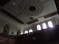
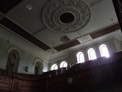

Methodist Chapel
The Reverend Dafydd Jones, Llangan preached here and used a cart as a pulpit in the early years. In the beginning, the Methodists met in Abergafran. The first chapel was built around 1780. Work started on the present chapel (5th), in 1903. Evan Roberts, the Revivalist was the first to preach here in 1905, despite not having finished painting the chapel. It was built as a focal point for religion and community activities in the heyday of the granite industry.
 Photograph of the chapel from lower side of village
Photograph of the chapel from lower side of village
Here’s a record of the chapel in the Non-parochial Register
Llithfaen chapel – Welsh Calvanistic Methodist Founded 1785.
C.M Chapel – The Building work in 1870 and it cost around £430. It was preached in for the last time on 27 March 1904. The chapel house and a stable was built parallel to the chapel in the opposite direction.
Here is a record of the chapel by CADW (31 October 2012):
AuthorityGwynedd | CommunityPistyll | LocalityLlithfaen | Record No.21726 |
|---|---|---|---|
Grid Ref235781 343172 | GradeII* | Name of PropertyCapel Methodistiaid Calfinaidd | Date Listed18/05/1999 |
Street SideS | LocationThe chapel stands E of the centre of the village, with its axis parallel to the main road. |
|---|
HistoryThe chapel, locally known as Capel Isaf, was the fifth chapel built in the village for the expanding Calvinistic Methodist community. It was erected in 1905 to the design of Owen Morris Roberts of Porthmadog, and built by Griffith Jones of Morfa Nefyn. |
|---|
ExteriorStonework, rendered and lined out, with raised quoins and pilasters. Slate roof. The main front faces W over a forecourt railed to the road. It is a well-proportioned composition of 3 bays, 2 stages, the centre bay slightly recessed behind an arch, rising into the pediment. Central pair of panelled doors with fanlights, set within pilastered and architraved doorcase; above 3 narrow margin glazed lights, similarly framed. The two side bays are identical, with similar paired windows to both stages. In the central arch, the inscription LLITHFAEN M.C. 1905. The side elevations of the chapel itself are of 5 bays, arched window to the upper stage, square headed below, all with margin glazing and slate sills. At the rear, the large vestry is set at right angles, separated from the chapel by a 1-bay, 2 storey service link. The vestry is 2 windows wide and has arch-patterned gables. |
|---|
InteriorThe interior, designed to seat c700, is completely unaltered since 1905. Moulded compartmented plaster ceiling with large bold roundels, plastered walls lined and painted as ashlar, and pine dado. A gallery of 5 tiers of pews supported on fluted iron columns and brackets, with a boldly carved and decorated front, remarkable for extending by curved corners around all four sides, including for the male voice choir at the E end, and with a dropped gallery immediately behind the pulpit for the organ. Three banks of slightly raked pews focusing on the panelling-enclosed set-fawr, which has fully upholstered seating, and a raised pine pulpit carved with sunflowers, flanked by carved minister's chairs and approached from railed steps each side. The chapel has staging for erecting over the set-fawr for local eisteddfodau. The entrance lobby runs across the width of the building and has a stained glass panel to the body of the chapel. Clock by Roberts and Owen, Carnarvon, 1905. The link to the vestry has fireplace and kitchen, with a deacon's room on the S side, and the large vestry, which seats 300, is furnished with reversible benches and has a carved pulpit at the W and a raised E end. |
|---|
Reason for DesignationIncluded as a large and well preserved chapel with an impressive and carefully designed interior, including good detail, built as a religious and social focus for the whole community at the time of the prosperity of the quarrying industry in the district. |
|---|
Yr Herald Gymraeg, 14 April 1903
Llithfaen – CAPEL NEWYDD – yn ateb i’r hysbysiad yn yr “Herald,” daeth chwech i geisio am wneyd capel newydd y Methodistiaid. Derbyniwyd cynnyg Mr Griffith Jones, Morfa Nefyn i wneud y gwaith am £1858 10s
Synopsis of a report written by Arifog on the chapel:
“Ystyriais y dyddiau gynt”
“Hyn a ysgrifennir i’r genhedlaeth a ddêl”
( “I write in days gone by”
“What is written for the generation to come” )
Those are the words on the inside cover of the report of the fund for building Llithfaen C.M. Chapel, published in 1910. At the end of the report there is ‘Trem ar Hanes y Methodistiaid Calfinaidd yn Llithfaen’ (An Overview of the history of the Calvanistic Methodists in Llithfaen’) by J.O.Jones (Arifog).
View of chapel from the East in 1910
An honourable sum of £1370 3 shillings and 4 pence was raised by the congregation to build the new chapel. This was a fair chunk of the £3081, 8 shillings and 2 pence spent on building the chapel. The rest of the funds were gifts and other loans, some from as far as Caernarfon, Llanllyfni and even Warrington and Manchester. The Reverend E.S. Morris chaired the working group, Mr. William Evans, Post Office was treasurer, Mr. Evan Williams, Tanyffynnon, was the finance secretary and Mr. H. Griffith, Tŷ’r Ysgol was the general secretary. The secretaries and treasurers for the congregation were Msrs. W. H. Roberts, Post Office; Mathew J. Williams, Alpha House; William Griffith, Bryn Dirwest; Richard Williams, Brynffynnon; R.J. Parry, Cilia; and Evan Griffith, Victoria Terrace. The building was designed by Msrs. Owen Roberts and Son, Porthmadog and built by Mr. Griffith Jones, Morfa Nefyn.
The first public service was held here by Evan Roberts, the Revivalist on 12 December 1905. The Reverend E. Sidney Morris did the readings and offered the prayers. The chapel wasn’t completely ready, as the painters hadn’t finished their jobs yet.
The new chapel was preached in for the first time on 1 April 1906, and the first marriage service was held there on 15 August, between John Williams, Brynffynnon and Mary Ellen Griffiths, Fronhyfryd Terrace. They were given a lovely Bible with a picture of the new chapel on the inside cover.
 Chapel "elders" in front of pulpid
Chapel "elders" in front of pulpid
In this period, Llithfaen was on the main road between the Llŷn Peninsula and Arfon and Anglesey. Arifog believes that this is why that the religion took hold here so early. The movement in Llithfaen, he said, was long established with an interesting history.
In a period of a century, Llithfaen and the area had seen a lot of change. It was a poor village, with nothing grand to be seen except for a cluster of cottages. The villagers were nearly all agricultural labourers and farmers. By the turn of the last century, the area had been transformed by industry and the villagers started transforming the mountain rocks into bread.
Religion in the area is first mentoned in a book ny the Reverend Robert Jones, Rhoslan, in which he mentions John Roberts, Nant Gwrtheyrn, who worries about the salvation of his soul, dreaming he would one day se a head comig from the South and setting the country alight, and declaring the word until the counties arise from their slumber with excitement. His dream came true and the reformation swept through Wales, England, Scotland and America.
We cannot be certain when people started preaching in Llithfaen but the Reverend Dafydd Jones, Llangan, (1735-1810) came here to preach in the early days. According to tradition, he preached in a place called “Cae Grug” (Heather Field), close to where Gorwel is today, and services were held there. The pulpit was a cart and it was a summer’s day when a crowd of people gathered to listen to him. There must have been a religious movement here before 1778, because there is a record on a gravestone in Carnguwch of someone wh joned the church that year.
In this period, assemblies used to gather in Abergafran (Yr Aber), a small thatched roof farmhouse. If the weather was fair, and the house couldn’t accomadate a congregation because of its size, the service was held in front of the house, and the preacher and congregation could take full advantage of the sloping hill. The preacher stood by the great hawthorn tree opposite the door. The hawthorn outlived the original house that was built and whitewashed. The villagers made fun of the worshipers that used to attend calling them ‘Pengryniad’ (Those with bowed heads) and ‘epil Howel Harris’ (Howel Harris’ offspring).
The first chapel
The first chapel was built around 1780, where Y Ganolfan stands today (the old school). The venture met with stern opposition by Mrs. Llwyd, a lady living in Ffridd. This chapel had a thatched roof and a soil floor, a small window and a loft or small gallery overhanging a part of it. Since there was no chapel in Pistyll, Llanaelhaearn or Llwyndyrus, people flocked to Llithfaen from far and wide. The Reverend Thomas Charles, y Bala, preached in this chapel at least once in September 1785, whilst on his first preaching journey in Lleyn. He stayed the night in Yr Aber with Morris Jones. The first chapel remained there until 1861, even though it was converted to a house years before
The Sunday school started in Llithfaen in 1786, being the one of the first Sunday schools established in the county. The Sunday school was held in the chapel with the thatched roof, and those prominent in establishing the Sunday school were Thomas Ellis, Hafod; Richard Davies and David Pritchard, Gefail Pennant; Evan Pritchard, Llithfaen Isaf; and Ellis Jones the tailor. The children at the time weren’t overly keen on going to Sunday school. Davies Pritchard, a young, fit man was given the job of rounding up the children, and afther cornering them, Morris Jones, yr Aber and his rod was called on to keep order and prevent the children from escaping.
Thomas Ellis, Hafod (1738-1804) was a pale, crooked, tall man. He was a farmer and he also preached as a deacon in chapel. Thomas Ellis was notable for his loyalty to the cause and his zeal and humility. He wrote the following hymn;
Galaru’r wyf mewn dyffryn du, Wrth deithio i dŷ fy nhad; Ar ben y bryniau’n llawenhau Wrth weled cyrau’r wlad: ‘Rwy’n ddu fy lliw, a’m gwisg yn wen; ‘Rwyn llawen ac yn brudd; ‘Rwyn agos iawn, ac eto’n ‘mhell; ‘Rwyn waeth, ‘rwyn well, bob dydd. |
(I mourn in a dark valley,
On the way to the house of God; Atop the hills I do rejoice On seeing vastness of the land My skin is dark, my clothing white; I’m joyful yet so sad; I’m oh so close, and yet so far I’m worse and better every day) |
|---|
Richard Davies was born in Llangian and came to live in Efail y Pennant. He used to walk from Lleyn to Llangeitho to the communion. He died in Tynlôn and was buried in Pistyll cemetery in an unmarked grave.
David Pritchard was Richard Davies’ son and he used to walk to the religious meetings in Llithfaen after moving to Llanaelhaearn in 1826. He was described by Robert Hughes, Uwchlaw’r Ffynnon as a:- "Tall, bony old man, who appeared scruffy unkempt. He used to wear heavy clogs, waleked with a funny gait. He wore an apron over his clothes, the bottom of which was very tarnished and covered with soot from the smithy. His face gave his occupation away"
He knew the Bible inside out and he used to follow every preacher that came to Llithfaen. He died in 1862 and was buried in Llanaelhaearn.
Evan Pritchard was a butter trader, buying it in Lleyn and selling it to the cyclical counties. One Sunday men in the village disrespected the Sabbath by playing Bandy whilst the service was held in the chapel. Evan Pritchard went to try to persuade them to go to the chapel and in doing so he was hit in his leg and he was lame for a while afterwards.
Ellis Jones, the tailor lived at Tyn y Gors, near Carnguwch Fawr. He was going from house to house making clothes. Mischievous lads would flee when seeing Ellis Jones coming over Carnguwch mountain for the chapel according to Arifog. He would walk to the services whatever the weather even though his route was long and inaccessible.
The second chapel
The land was given to build the second chapel by John Rowlands, Llithfaen Fawr in 1804. The first trustees were – James Hughes, the Cobbler , Sarn Mellteyrn; Michael Roberts, Schoolmaster, Pwllheli; Richard Jones, Farmer, Coedcaedu; William Humphreys, Bwlch; Evan Parry, Ffridd; Griffith Humphreys, Carnguwch Bach; and David Wilson, Floorer, Nefyn.
The second chapel stood on the other side of the wall to the existing chapel and was much better built than the thatched roof chapel. There was also a gallery in this chapel. The pulpit was at the back, and the door was opposite facing southwards. There was a garden where Tŷ Croes stands today, and a path going through to the stone steps leading to the chapel's loft. The chapel house stood at the eastern end. In the loft of that house was the room of the preachers and the deacons. There were steps from that room to the sêt fawr.
The officers in that period were Robert Sion Hughes, Siop y Rhos; Griffith Humphreys, Carnguwch Bach; Robert Humphreys, Felin; and John Roberts, Caepricia (Tyncae).
Robert Sion Hughes was a preacher. The payment at that time was between a shilling and eighteen pence. He once settled for a sack of straw for his troubles. It is said that his sermon in Penmount, Pwllheli sparked the reformation in the neighbouring areas.
Robert Humphreys was the eldest son of Humphrey Evans, Carnguwch. He was an excellent orator and public speaker and knew the Bible inside out.
Giffith Humphreys was born in 1765. He was known for his short prayers. He wouldn’t be kneeling for more than five minutes. Ioan Llŷn (Foel) describes him:
“The main deacon was our great uncle, in his humble outfit, he olways wore a shirt that I called a ’Spencer’ – a kind of lose work shirt that covered all his other clothesl. His voice when he prayed was like a sweet melody fluttering from F to G, and his prayers and observations were short, sweet and to the point”.
John Roberts, Caepricia, was the youngest. No one knows when he died or where he is buried.
According to Arifog, powerful things were seen in the neighbourhood during the 1831-1832 Revival. One was experienced in Tai Uchaf and the feelings ran very high. Going home from the meeting, Sian y Foel (who later emigrated to the United States) was joyful. Some of the village's mischievous boys laughed at her. She told them "Don't laugh, my boys, for I’ve had too much wine from God's cellar."
At another meeting, there was so much excitement at a meeting in the Cilia, Humphrey Griffith had his work cut out to protect his furniture from being damaged. The excitement was usually contained on the floor of the chapel with the people in the gallery looking on but sometimes the excitement would rise to the gallery. One Sunday morning that’s exactly what happened; A young farmer's daughter was so overcome in the gallery, that she she cried out the words of the hymn “Pwy a wyr na olchir finnau.” (Who knows if I be blessed). A young man sang it with such gusto that he jumped thom the gallery onto the worshipers below.
The third chapel
The third chapel was built in 1834. Its front was southbound and in that wall there were two doors, one each side of the pulpit. The seats formed a half-circle that benefited both the preacher and the listeners. It measured 12 metres by 10 metres. There has also a daily school held in the chapel for a while, under the care Miss Ann Pugh, from South Wales and later the Reverend Robert Griffith, Pencaenewydd.
The deacons during this period were John Griffith, Gellia; Richard Owen , Llithfaen Isaf; John Griffith, Gwyniasa; and William Jones, Llithfaen fawr.
Richard Owen, Llithfaen Isaf delivered excellent prayers. He is reported starting a meeting in Edern in front of the Reverend John Jones, Talysarn. He did not read the correct psalm, but the listeners did not forget his prayer, the place had actually been turned into the gateway of heaven and the famous preacher himself had been surprised by his sweeping eloquence.
The Reverend David Pritchard from Arfon came to live at Tyn y Garreg during this time. He was said to have seven preachers in all but he had been on preaching tours in the company of famous names such as John Jones, Talysarn. They rode on horses, and each journey lasted for about 6 weeks.
Richard Ellis, Plas oversaw the singing, and he was given a blue suit in recognition of his hard work. In 1847 there were 22 teachers in the Sunday school, 5 female teachers, 45 members under the age of 15 and 135 over the age of 15. In January 1848 a form of jubilee was held to celebrate the payment of the £80 debt against the chapel.
‘In 1859 Wales was gripped by a powerful Religious Reform. This reached the slopes of the Eifl and did damage on the enemy's camp, and many prisoners were freed. The meetings continued until the early hours of the morning, and the sound of a song and praise was heard echoing in the nearby cliffs, while the enthusiastic worshippers returned to their homes outside the village.'
There were two plots of land associated with the chapel, and from these, hay was collected for the preachers' horses. Evan Jones, y Blaenau, was responsible for the stable. These two plots later became a cemetery. Burial began in the cemetery on 8 January 1866, and the first to be buried there was David Roberts, y Foel.
When the Reverend William Evans, Tan yr Efail visited Llithfaen he and his companion stood to preach in the window. There was a huge crowd in the nearby field listening to them, many coming from a great distance.
The fourth chapel
One of the first chapels at the start of the twentieth century.
Building work started in 1870 and cost about £430, though it must be noted that a lot of the wood and stone from the previous chapel was used, and most of the members worked on the chapel for free. The chapel was designed by the Reverend Thomas Owen, Pentreuchaf, and it was built by Mr. William Jones, Morfa Nefyn.
 The fourth chapel - Preached in for the last time on 27 March 1904. The chapel house ran perpendicular to the chapel.
The fourth chapel - Preached in for the last time on 27 March 1904. The chapel house ran perpendicular to the chapel.
It was a plain and simple building. This chapel was surely the biggest chapel in Llŷn and Eifionydd. The front door, in the eastern gable end and the pulpit stood opposite the door at the western gable end. There was a passage inside the chapel and a stained-glass window separated this corridor from the main body of the chapel. About twenty years later, because of a lack of room to sit, the entance corridor was knocked down. The chapel house was located on the southeren side, this included the deacons room and a room for the preachers. There was a garage and stable attached to the chapel house.
 MC Chapel pictured in 1887
MC Chapel pictured in 1887
The chapel library was established around 1900. David Jones, Fron, was the first librarian There were 161 books in the library in 1900 and by 1910 there were over 300 books in the library. The books were given out, and collected at the end of the Sunday School.
There was no vestry in the chapel and it was strongly considered that old chapel should be repaired or a new one built. It was decided to make the land where the chapel stood available for the expansion of the cemetery, and to build a new chapel on a messy piece of land where the remains of Stryd Fain (Narrow Street) were. The land was purchased by Kneeshaw, Lipton and Co., the owners of Nant quarry for £180 and Mrs. Pritchard, Fron, Pentruchaf a Llithfaen Bach gave a bit of land, so that the boundaries were made. The contract for ensuring the chapel was lit properly was given to J Gas Jonesl!!
Construction of the vestry began in the spring of 1903. The old chapel was preached in for the last time on 27 March 1904, the first baptism in the new vestry was held on 14 April 1904. The old chapel was demolished, and the stones were again used to build the new chapel.
Ellen Evans, Alpha recollects in an article published in Yr Herald Gymraeg:
I remember my home, in a small cottage in Llithfaen, close to the door of the Calvinistic Methodists Chapel, the third built in the area. The movement started in 1785 and the Sunday school in 1786.
I remember a stone chapel, facing east, with a stone walkway between the chapel and the cemetary. The first to be buried there were David Roberts, Y Foel in 1866 and his wife Ann in 1873. Their son was Ioan o Lŷn, one of the poets of London and he is mentioned in “Beirdd Gwerin Eifionydd” (The Folk Bards of Eifionydd) .
My first recollection of the chapel is of a farmer coming into the morning service at ten o’clock on a Sunday. He was an old man, and he came to chapel on his pony. I remember someone telling me that he was related to the person that wrote the hymn: “Galaru’r wyf mewn dyffryn du, wrth deithio i dŷ fy nhad”. I was only about two years old, and I still remember the sound of the pony’s horseshoes on the pavement, and listening to them in bed on a quiet Sunday morning.
It was this experience and the simplest of memories that shook me into going to chapel I expect. Afterwards, I found myself in Sunday school amongst friends. I remember a teacher saying she had a birch rod under her seat. I was there for a full term, though I don’t rechall her using the rod. I had a period of moving from one class to another, toiling over exams and sometimes achieving first class. There were always good teachers, and in one meeting, with the Reverend John Moses Jones, Dinas, as the examiner, two of us were chosen to recite parts of Mathew’s Gospel. After we finished, all he said was ‘Good’.
I remember the same man preaching on a Sunday evening in chapel, and hitting the lamp on the pulpit, and it smashed by the elder’s feet, ‘Don’t worry, Ifan,’ he said ‘…it’s only a bit of glass’. For some reason, I remember Sunday school much clearer than normal school.
The chapel services were, of course, the main focus of everything. Two full pews in Sunday school, and a commanding, solid character teaching s, six of his descendandts are in the ministry. We worked tirelessly for the children, and one of the sisterhood sat on the table in the ‘set fawr’. She was known in the area as ‘hen chwaer’ (‘dear sister’) and her name was revered. Two of her sons went into the ministry and one became a schoolmaster. I remember that she gave my mother a pickle jar as a wedding present, and my mother appreciated the sentiment.
The ministers that preached here, became solid men, and they taught us, as children to read texts on Sundays, to memorise the main points of sermons so that we could recite them in prayer meetings and discussion groups. Sometimes we were given a book as a present, and I still have one of those books ‘Y Bod o Dduw’ (The Being from God).
This is Ellen Evans once again in an interview with Dr Robin Gwyndaf, St Fagans National Museum of History;
I remember the chapel very well of course – in those days it was the focus of life, and there was a man there, Ifan Jones, Llithfaen, in charge of leading the singing, and one day, I saw him coming towards me in the village, and I thought he was Jesus Christ, so I ran to the house, closing the door behind me until he passed. Ifan Jones was a vert imposing man, and I thought he was a very important man in chapel, so naturally, I thought him to be Jesus Christ.
CM Chapel in 1887
 This is the picture of Capel Isaf from the lower side of a village
This is the picture of Capel Isaf from the lower side of a village
Census Facts:
 

The chapel before the start of repair